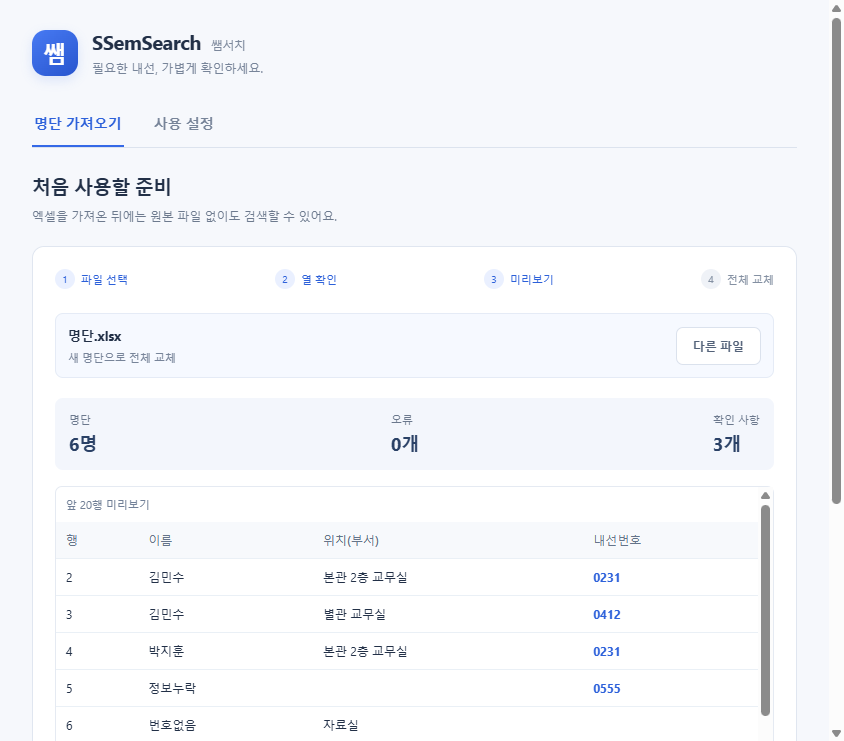

하던 일 그대로
내선표 파일을
다시 열지 않아도
문서를 작성하다가도 단축키로 검색하세요. 번호를 확인하고 Esc를 누르면 검색창이 접힙니다.
선생님을 위한 작은 업무 도구
“그 선생님 내선이 몇 번이더라?”
왼쪽 Alt 두 번이면, 하던 일 위에 검색창이 열려요.
이름이나 위치(부서)로 찾고, 바로 업무로 돌아가세요.
직접 입력해 보세요. 모든 이름과 번호는 가상 예시입니다.
실제 앱에서는 왼쪽 Alt 두 번으로 열 수 있어요. 떠 있는 아이콘은 설정에서 켤 수 있어요.
인터넷 없이도 내선 검색
명단은 서버로 전송하지 않아요
학교 엑셀 명단 그대로
작은 검색 하나가 바꾸는 일상
매일 반복하는 작은 일을, 조금 더 간단하게 만듭니다.
하던 일 그대로
문서를 작성하다가도 단축키로 검색하세요. 번호를 확인하고 Esc를 누르면 검색창이 접힙니다.
기억나는 것 하나로
이름, 위치(부서), 내선번호 중 아는 것만 입력하세요. 같은 이름도 근무 장소와 함께 확인할 수 있어요.
한 번 준비하면
엑셀을 가져온 뒤에는 원본 파일 없이도 검색해요. 새 학기 명단이 바뀌면 다시 가져오면 됩니다.
처음부터 함께 해볼까요?
아래 단계를 선택하면 자세한 안내를 볼 수 있어요.
매일 쓰는 PC라면 설치형을 권장해요. 설치 없이 시작하려면 무설치형 파일을 원하는 폴더에 두고 실행하세요.
Windows x64용입니다. 학교 PC에서는 기관의 프로그램 설치 정책을 확인해 주세요.
다운로드 파일 고르기
가상 명단 예시 · 이미지를 누르면 크게 볼 수 있어요.
한글 문서나 정리되지 않은 명단이라면 앱의 명단 정리가 어려우신가요? AI로 변환하는 방법을 눌러 보세요. 양식 준비부터 요청문 복사, 결과 확인까지 단계별 애니메이션으로 안내해 드려요.
내선번호는 ‘231’처럼 입력하고, 엑셀 셀 형식은 텍스트로 설정해 주세요. 새 파일을 가져오면 기존 명단 전체가 바뀝니다.
왼쪽 Alt를 두 번 짧게 누르세요. 아이콘 사용을 원하면 설정의 아이콘 켜기를 체크하고 저장하세요. 이름·위치(부서)·내선을 입력해 번호를 확인하고 같은 단축키 또는 Esc로 접으면 됩니다.
아이콘은 기본으로 숨겨집니다. 켠 경우 마우스를 올리면 미리보기만 열립니다. 클릭하면 입력할 수 있어요. 검색 결과는 번호 확인용이며 자동 전화 연결이나 복사 기능은 없습니다.
더 편하게 쓰는 작은 습관
설정에서 Windows 자동 시작을 켤 수 있어요. 기본값은 꺼져 있으니, 매일 사용한다면 직접 켜 주세요.
검색창 상단을 드래그해 편한 곳으로 옮기세요. 떠 있는 쌤 아이콘은 원하는 분만 설정에서 켤 수 있어요. 설정에서 작업표시줄 바로 위에 표시하거나 Ctrl+Alt 등 원하는 단축키로 바꿀 수 있어요.
담당 부서에서 받은 최신 명단으로 전체 교체하세요. 설정에서 마지막으로 가져온 날짜와 인원을 확인할 수 있어요.
작은 변화, 지금 시작해 보세요
무료로 내려받고, 학교 명단만 준비하세요.
계정도, 회원가입도 필요 없습니다.
v1.1.1 · Windows x64
시작 메뉴와 바탕화면에 바로가기를 만들어요.
자동 시작을 설정해 두고 사용하기 편해요.
파일을 원하는 폴더에 두고 실행하세요.
USB에 담거나, 먼저 가볍게 써보기 좋아요.
처음 실행할 때 알아두세요. 코드 서명이 없는 배포 파일이라 Windows에서 보호 안내가 나타날 수 있어요. 배포 출처와 학교 보안 정책을 확인하고, 실행이 제한되면 전산 담당자에게 문의해 주세요.
지금은 Windows PC용 앱입니다. 이 페이지 주소를 Windows PC에서 열어 내려받아 주세요.
궁금한 점이 남았나요?
내선 검색부터 명단 관리까지.
무료로 사용할 수 있으며 계정을 만들 필요도 없습니다. 내려받은 앱에서 학교 엑셀 명단을 등록하면 사용할 수 있어요.
앱은 명단을 인터넷 서버로 보내지 않습니다. 명단과 설정은 내 PC의 Windows 사용자 폴더에 저장하고, 검색어나 키 입력 내용을 기록하지 않습니다.
다만 저장 파일은 암호화되지 않은 JSON 형식이어서 같은 Windows 계정으로 접근하는 사람이 읽을 수 있습니다. 공용 PC의 계정과 파일 접근 권한을 관리해 주세요. 앱을 제거해도 저장된 명단은 자동 삭제되지 않습니다.
저장 위치: %APPDATA%\SSemSearch
앱을 내려받은 뒤 내선 검색에는 인터넷이 필요하지 않습니다. 앱은 .xlsx 파일을 직접 읽으므로 명단 가져오기와 검색에 Microsoft Excel 설치가 필요하지 않습니다. 명단을 만들거나 수정할 때는 .xlsx를 저장할 수 있는 프로그램을 사용하세요.
이름·위치(부서)·내선번호가 있는 .xlsx 파일을 준비하세요. 10MB 이하, 머리글 아래 데이터 영역 5,000행·100열 이하를 지원합니다. 병합 셀, 수식, 날짜, 오류 셀은 수정해야 합니다. 빈 셀은 위치를 안내하고 나머지 정보로 등록할 수 있어요.
이 페이지의 빈 엑셀 명단 양식을 쓰면 편해요. 내선 열은 텍스트 형식으로 설정되어 있습니다. 앞자리 0이 이미 없어진 번호는 앱이 자동 복원하지 않습니다.
앱의 AI 변환 안내에서 양식을 받고, 기존 한글 문서를 PDF로 저장하거나 표를 캡처해 준비하세요. 학교에서 사용을 허용한 AI에 원본과 양식을 첨부하고 복사한 요청문을 보내면 됩니다. 결과는 원본과 대조한 뒤 등록해 주세요. 쌤서치가 명단을 AI에 자동 전송하지는 않습니다.
동명이인과 공용 내선을 모두 표시하므로 위치(부서)를 함께 보고 확인하세요. 최신 명단을 다시 가져오면 기존 명단 전체를 교체합니다. 기존 명단에 추가되는 방식이 아니므로, 전체 명단이 담긴 파일을 선택해 주세요.
오른쪽 Alt나 한영 키가 아니라 왼쪽 Alt를 짧게 두 번 눌러 보세요. 설정에서 아이콘 켜기를 선택하면 아이콘을 클릭해도 검색할 수 있습니다. 다른 프로그램과 단축키가 겹치면 쌤서치 설정에서 바꿔 주세요. Alt+Alt처럼 조작키 두 번, Ctrl+Alt처럼 조작키끼리의 조합도 지정할 수 있어요.
현재 배포 파일은 Windows x64용입니다. 맥, 휴대폰용 앱은 제공하지 않습니다. 이 웹페이지의 검색 체험은 휴대폰에서도 이용할 수 있지만, 실제 학교 명단 검색은 Windows 앱에서 사용해 주세요.
우리 학교 내선, 필요할 때 바로. 쌤서치.